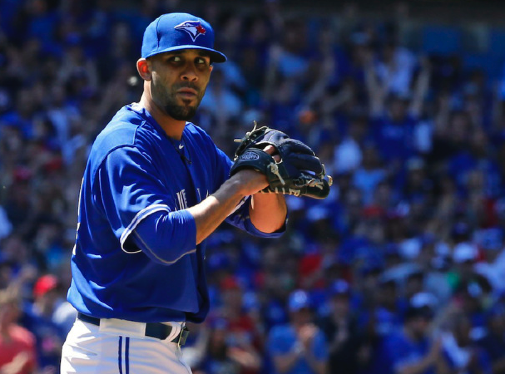
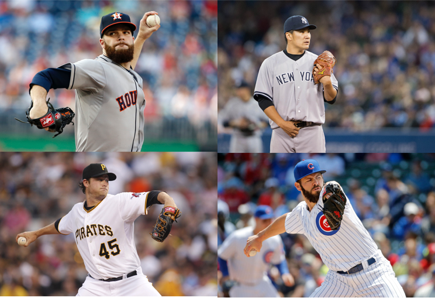

Executive Editor and Columnist, MLB and NFL
Yogi Patel
Yogi Patel is the Executive Editor of MLB and NFL content for The Sports Whorl.
Twitter: @yogster92
All Articles

MLB
The Great One
Clayton Kershaw’s at the top of his game, yet he still keeps improving and innovating
Published on May 21, 2016

MLB
A Clash for the Ages in Chi-Town
The Cubs host the Nationals in an exceedingly satisfying four-game showdown
Published on May 7, 2016

MLB
Six Slow Starts
These six stars have sputtered to begin the season, but they should return to their otherworldly abilities soon
Published on April 29, 2016

MLB
10 Greatest First-Halves in Recent MLB History
Trevor Story and Robbie Canó have had impressive starts this season, but can they stack up against the all-time greats?
Published on April 14, 2016

MLB
Opening Day is Finally Here
The first day of the baseball season arrives with a scintillating three-game slate
Published on April 3, 2016

MLB
The Evolution of Alex Rodriguez
Alex Rodriguez’s baseball career has been a roller coaster ride, and his journey is one worth admiring
Published on April 1, 2016
MLB
For the Flair of the Game
Bat tosses, fist pumps, and cartwheels are changing baseball as we know it
Published on March 18, 2016

MLB
2016 MLB Season Predictions
The birds are chirping, the grass is pristine, it must be baseball season!
Published on March 4, 2016

NFL
Super Bowl 50 Recap
Backed by a dominant defense, Peyton Manning and the Denver Broncos triumphed in Santa Clara
Published on February 11, 2016

NFL
Super Bowl 50 Preview
Five keys to victory for the Broncos and the Panthers
Published on February 5, 2016

NFL
NFL Playoffs: AFC Championship Preview
The Broncos look to eliminate the Patriots en route to Peyton Manning’s final Super Bowl run
Published on January 23, 2016

NFL
NFL Playoffs: AFC Divisional Round Breakdown
Tom Brady’s Patriots look to start their Super Bowl run while Peyton Manning’s Broncos try to figure out the Steelers
Published on January 15, 2016
NFL
NFL Wild Card Preview
Eight teams face off this weekend, only four will advance
Published on January 8, 2016

MLB
2015 World Series - Games 3, 4, and 5 Recap
The Kansas City Royals emerge as the 2015 World Series champions
Published on November 3, 2015

MLB
2015 World Series - Games 1 and 2 Recap
The series heads into a pivotal three game stretch in New York
Published on October 30, 2015

MLB
Jacob deGrom Channels His Inner John Smoltz
The young Met resembles the former Braves ace
Published on October 26, 2015

MLB
2015 NL Championship Series Preview
Chicago Cubs vs. New York Mets
Published on October 16, 2015

MLB
2015 AL Championship Series Preview
Toronto Blue Jays vs. Kansas City Royals
Published on October 16, 2015

MLB
2015 NL Division Series Preview
NY Mets vs. LA Dodgers; CHI Cubs vs. STL Cardinals
Published on October 9, 2015

MLB
2015 AL Division Series Preview
Rangers vs. Blue Jays; Astros vs. Royals
Published on October 8, 2015

MLB
2015 MLB Playoffs - Wild Card Preview
Astros vs. Yankees; Cubs vs. Pirates
Published on October 6, 2015

NFL
Week 2 NFL Recap
Unlucky Andrew Luck and Sleeping Seattle Seahawks
Published on September 24, 2015

MLB
A Twisty-Turny MLB Season
Evaluating the MLB Divisional Races heading into the postseason.
Published on September 18, 2015